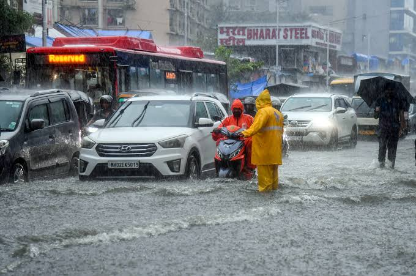

🌧️ బంగాళాఖాతంలో వాయుగుండం.. ఏపీ, తెలంగాణకు భారీ వర్ష సూచన

బంగాళాఖాతంలో ఏర్పడిన అల్పపీడనం వాయుగుండంగా మారడంతో తెలుగు రాష్ట్రాల్లో వాతావరణం ఒక్కసారిగా మారింది. ఈ వాయుగుండం ప్రభావంతో ఆంధ్రప్రదేశ్, తెలంగాణలో రానున్న రోజుల్లో వర్షాలు కురిసే అవకాశం ఉందని వాతావరణ శాఖ అంచనా వేసింది. ఇప్పటికే ఏపీలోని పలు జిల్లాల్లో వర్షాలు కురుస్తుండగా.. మరికొన్ని ప్రాంతాల్లో మోస్తరు నుంచి భారీ వర్షాలు నమోదయ్యే అవకాశం ఉందని అధికారులు చెబుతున్నారు.
వాతావరణ శాఖ వివరాల ప్రకారం.. వాయుగుండం పశ్చిమ బెంగాల్, ఉత్తర ఒడిశాను ఆనుకుని వాయువ్య బంగాళాఖాతంలో కొనసాగుతోంది. ఇది క్రమంగా వాయువ్య దిశగా పయనించే అవకాశం ఉంది. ఈ వ్యవస్థ ప్రభావంతో ఆగస్టు 18 నుంచి 23వ తేదీ వరకు ఏపీలోని పలు ప్రాంతాల్లో వర్షాలు కురిసే అవకాశం ఉన్నట్లు అధికారులు తెలిపారు.
కోస్తాంధ్ర, రాయలసీమ ప్రాంతాల్లో తేలికపాటి నుంచి మోస్తరు వర్షాలు పడే అవకాశాలు ఉన్నాయి. కొన్ని ప్రాంతాల్లో ఒక్కసారిగా భారీ వర్షాలు కురిసే అవకాశం కూడా ఉందని వాతావరణ శాఖ హెచ్చరించింది. ముఖ్యంగా వర్షాలతో పాటు గంటకు 40 నుంచి 50 కిలోమీటర్ల వేగంతో ఈదురుగాలులు వీచే అవకాశం ఉన్నందున ప్రజలు అప్రమత్తంగా ఉండాలని సూచించింది.
తెలంగాణలోనూ రానున్న రోజుల్లో వర్షాల ప్రభావం కనిపించే అవకాశం ఉంది. పలు జిల్లాల్లో మేఘావృత వాతావరణం కొనసాగుతూ అక్కడక్కడ వర్షాలు కురిసే అవకాశం ఉందని అధికారులు అంచనా వేస్తున్నారు. ఇప్పటికే రాష్ట్రంలోని కొన్ని ప్రాంతాల్లో వర్షాలు నమోదవుతున్నాయి. వర్షాల కారణంగా ఉష్ణోగ్రతలు కొంత తగ్గి వాతావరణం చల్లబడే అవకాశం ఉంది.
మత్స్యకారులకు కీలక హెచ్చరిక:
వాయుగుండం ప్రభావంతో సముద్రం అల్లకల్లోలంగా మారే అవకాశం ఉందని వాతావరణ శాఖ అధికారులు హెచ్చరించారు. ఆగస్టు 19 వరకు మత్స్యకారులు సముద్రంలోకి చేపల వేటకు వెళ్లవద్దని సూచించారు. తీర ప్రాంతాల్లో నివసించే ప్రజలు కూడా అప్రమత్తంగా ఉండాలని అధికారులు కోరారు. బలమైన గాలులు వీచే అవకాశం ఉన్నందున సముద్ర తీర ప్రాంతాల్లో అవసరం లేకుండా బయటకు వెళ్లకపోవడం మంచిదని సూచించారు.
ఇదిలా ఉండగా.. ఏపీలోని అల్లూరి సీతారామరాజు జిల్లాలో ఇప్పటికే వర్షాలు నమోదయ్యాయి. హుకుంపేట, పెదబయలు, పాడేరు ప్రాంతాల్లో వర్షాలు కురిశాయి. కొన్ని ప్రాంతాల్లో వర్షపు నీరు పొలాల్లోకి చేరింది. ఖరీఫ్ సాగు ప్రారంభించిన రైతులకు ఈ వర్షాలు కొంతవరకు ప్రయోజనం చేకూర్చే అవకాశం ఉందని అధికారులు చెబుతున్నారు.
అయితే కొన్ని ప్రాంతాల్లో అధిక వర్షాల కారణంగా పంట పొలాల్లోకి నీరు చేరడంతో రైతులకు ఇబ్బందులు ఎదురయ్యే పరిస్థితి కూడా ఉంది. పంటలు నీట మునిగితే నష్టం జరిగే అవకాశం ఉన్నందున రైతులు పొలాల్లో నీరు నిల్వ ఉండకుండా అవసరమైన చర్యలు తీసుకోవాలని సూచిస్తున్నారు.

రైతులకు వర్షాలు కీలకం:
ఏపీలో ఈ ఏడాది కొన్ని ప్రాంతాల్లో ఆశించిన స్థాయిలో వర్షపాతం నమోదుకాకపోవడంతో రైతులు ఇబ్బందులు ఎదుర్కొంటున్నారు. వర్షాలపై ఆధారపడి సాగు చేసే రైతులకు ప్రస్తుత వర్షాలు కొంత ఉపశమనం కలిగించే అవకాశం ఉంది. ముఖ్యంగా ఖరీఫ్ పంటలకు అవసరమైన తేమ అందితే సాగు పనులు వేగం పుంజుకునే అవకాశం ఉంది.
అయితే ఒకేసారి భారీ వర్షాలు కురిస్తే పంటలకు నష్టం వాటిల్లే ప్రమాదం కూడా ఉంది. అందువల్ల రైతులు వాతావరణ శాఖ సూచనలను గమనిస్తూ సాగు పనులు చేపట్టాలని అధికారులు సూచిస్తున్నారు. అవసరమైతే ప్రత్యామ్నాయ పంటల సాగుపై కూడా రైతులు దృష్టి పెట్టాలని సూచిస్తున్నారు.
మొత్తంగా బంగాళాఖాతంలో ఏర్పడిన వాయుగుండం ప్రభావంతో ఏపీ, తెలంగాణలో రానున్న రోజుల్లో వర్షాలు కొనసాగే అవకాశం ఉంది. కొన్ని ప్రాంతాల్లో భారీ వర్షాలు, ఈదురుగాలులు ఉండే అవకాశం ఉన్నందున ప్రజలు అప్రమత్తంగా ఉండాలి. మత్స్యకారులు సముద్రంలోకి వెళ్లకుండా జాగ్రత్తలు పాటించాలి. రైతులు కూడా తమ పంట పొలాలను పరిశీలిస్తూ వర్షపు నీరు నిల్వ కాకుండా ముందస్తు చర్యలు తీసుకోవడం మంచిది.
← హోమ్ పేజీకి వెళ్లండి